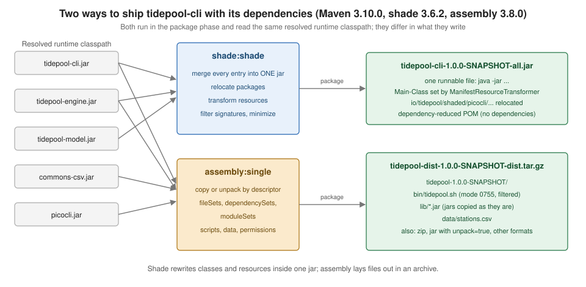

Uber JARs with Shade & Assembly
|
This content was generated with the assistance of AI and should be verified against the official documentation before being relied on in production. |
This page is written against Apache Maven 3.10.0 with the Apache Maven Shade Plugin 3.6.2, the Apache Maven Assembly Plugin
3.8.0 and the Apache Maven JAR Plugin 3.5.1. Every example was run on JDK 26 on 2026-10-16 in scratch projects that mimic the
tidepool build (parent POM io.tidepool:tidepool-parent with the modules tidepool-model, tidepool-engine,
tidepool-cli and, new on this page, tidepool-dist). Maven 3.9.16 and Maven 4.0.0-rc-7 (a release candidate) were run where
the page says so. Paths in the console output were shortened and long listings were filtered with grep, which is said each
time. The tidepool command prints a number with the default locale of the JVM, so every run of it on this page used
-Duser.language=en -Duser.country=US (through JAVA_OPTS for the launcher script). Plugin versions are the stable releases
found on Maven Central on 2026-10-16. Nothing was published anywhere; artifacts were only installed into a scratch local
repository.
A JAR built by Maven contains only the classes and resources of its own module. The libraries it needs are not inside, they are listed as dependencies in its POM, and whoever runs the program must supply them on the classpath. That is exactly what a Maven consumer does, but it is awkward for a command-line tool, an application server deployment or a download for a user who has never heard of Maven. This page covers the two plugins that solve it: the Shade plugin, which builds one JAR containing your classes and the classes of your dependencies (an uber JAR, also called fat JAR or shaded JAR), and the Assembly plugin, which builds an archive (ZIP, TAR, JAR) laid out as a descriptor says, which may be a fat JAR but is usually a distribution with scripts, libraries and data. The plain JAR and its manifest are on Packaging JARs, WARs & Manifests; this page starts where that one ends.
The problem, and three ways to solve it
The tidepool-cli module produces a thin JAR. Running it shows the two classic symptoms: without a Main-Class entry the
JVM refuses to start it, and with the main class named on the command line it cannot find the first library it needs.
java -jar tidepool-cli/target/tidepool-cli-1.0.0-SNAPSHOT.jar data/stations.csv SF
java -cp tidepool-cli/target/tidepool-cli-1.0.0-SNAPSHOT.jar io.tidepool.cli.Main data/stations.csv SFno main manifest attribute, in tidepool-cli/target/tidepool-cli-1.0.0-SNAPSHOT.jar
Exception in thread "main" java.lang.NoClassDefFoundError: picocli/CommandLine
at io.tidepool.cli.Main.main(Main.java:36)
Caused by: java.lang.ClassNotFoundException: picocli.CommandLine(The two commands were run one after the other; the output is in the same order.) There are three ways to fix it, and they differ in what you hand to the user:
| Approach | What you ship | Typical use |
|---|---|---|
Thin JAR plus a classpath |
The JAR with |
Internal tools; the libraries stay untouched and individually replaceable |
Uber JAR with shade |
One JAR with every class and resource merged, optionally rewritten (relocated, minimised) |
|
Distribution with assembly |
An archive with a layout you design: |
Applications installed on a server or downloaded by users; it can also produce an uber JAR |
Source: The java Command: Description

Both plugins read the resolved runtime classpath of the module they run in, both normally run in the package phase (the
phases are on Build Lifecycle) and both can attach what
they build as an additional artifact, so that install and deploy publish it. Ant does it with the jar and zipfileset
tasks (Packaging Archives) and Gradle with the application
distribution and third-party plugins; see Java Projects.
The Shade plugin
An executable JAR in one execution
The shade:shade goal takes the module’s JAR, adds the classes and resources of every dependency in the runtime classpath, and
writes the result. It is bound to the package phase in an <execution>, so that mvn package builds it. The only
configuration needed for an executable JAR is the Main-Class entry, which the ManifestResourceTransformer writes. The
plugin version is pinned (see
Maven Plugins & Their Configuration on why every
plugin version must be pinned) in the pluginManagement of the parent POM, as it is for the rest of this page.
<build>
<plugins>
<plugin>
<groupId>org.apache.maven.plugins</groupId>
<artifactId>maven-shade-plugin</artifactId>
<version>3.6.2</version>
<executions>
<execution>
<phase>package</phase>
<goals><goal>shade</goal></goals>
<configuration>
<transformers>
<transformer implementation="org.apache.maven.plugins.shade.resource.ManifestResourceTransformer">
<mainClass>io.tidepool.cli.Main</mainClass>
</transformer>
</transformers>
</configuration>
</execution>
</executions>
</plugin>
</plugins>
</build>mvn -B -DskipTests -pl tidepool-cli packageThe part of the output that is specific to the plugin (the lines about the repository downloads and the build summary were left out):
[INFO] Dependency-reduced POM written at: ./tidepool-cli/dependency-reduced-pom.xml
[WARNING] commons-codec-1.19.0.jar, commons-csv-1.14.1.jar, commons-io-2.20.0.jar, picocli-4.7.7.jar, tidepool-cli-1.0.0-SNAPSHOT.jar, tidepool-engine-1.0.0-SNAPSHOT.jar, tidepool-model-1.0.0-SNAPSHOT.jar define 1 overlapping resource:
[WARNING] - META-INF/MANIFEST.MF
[WARNING] commons-codec-1.19.0.jar, commons-csv-1.14.1.jar, commons-io-2.20.0.jar define 2 overlapping resources:
[WARNING] - META-INF/LICENSE.txt
[WARNING] - META-INF/NOTICE.txt
[WARNING] commons-codec-1.19.0.jar, commons-csv-1.14.1.jar, commons-io-2.20.0.jar, picocli-4.7.7.jar define 1 overlapping classes:
[WARNING] - META-INF.versions.9.module-info
[WARNING] maven-shade-plugin has detected that some files are
[WARNING] present in two or more JARs. When this happens, only one
[WARNING] single version of the file is copied to the uber jar.
[WARNING] Usually this is not harmful and you can skip these warnings,
[WARNING] otherwise try to manually exclude artifacts based on
[WARNING] mvn dependency:tree -Ddetail=true and the above output.
[WARNING] See https://maven.apache.org/plugins/maven-shade-plugin/
[INFO] Replacing original artifact with shaded artifact.The JAR now starts, and its manifest has the new entry:
java -Duser.language=en -Duser.country=US -jar tidepool-cli/target/tidepool-cli-1.0.0-SNAPSHOT.jar data/stations.csv SF
unzip -p tidepool-cli/target/tidepool-cli-1.0.0-SNAPSHOT.jar META-INF/MANIFEST.MFSan Francisco: -0.869 m
Manifest-Version: 1.0
Created-By: Maven JAR Plugin 3.5.1
Java-Version: 21
Build-Jdk-Spec: 26
Main-Class: io.tidepool.cli.MainThe JAR grew from 3,899 bytes to 1,413,222 bytes and 947 entries (the plugin kept the original, thin one as
original-tidepool-cli-1.0.0-SNAPSHOT.jar in target/). The messages are worth reading, because they are the plugin’s way of
saying what it had to decide for you:
-
Overlapping resources and classes. Two or more of the merged JARs contain an entry with the same path. Only one copy goes into the uber JAR and the others are dropped.
META-INF/MANIFEST.MFis harmless here, the plugin writes its own;LICENSE.txtandNOTICE.txtare a legal matter (see the transformers below); andMETA-INF.versions.9.module-infois the multi-releasemodule-info.classof three Commons libraries and Picocli, which is meaningless in a merged JAR (and so is excluded in the full configuration below). -
Replacing original artifact with shaded artifact. By default the shaded JAR replaces the project’s main artifact, so
installanddeploypublish the uber JAR under the plain coordinates. The alternative is to attach it with a classifier, covered a few sections down. -
Dependency-reduced POM written at …. The plugin also wrote a POM next to the module’s
pom.xml; it too has a section below.
What the goal can do
mvn shade:help -Ddetail -Dgoal=shade lists every parameter of the goal. These are the ones of the 3.6.2 plugin, grouped by what
they do (filtered with grep from the output; the descriptions are the plugin’s):
| Parameters | Purpose |
|---|---|
|
What goes into the JAR and how it is rewritten: resource transformers, include/exclude filters per artifact, class relocations,
and the set of dependencies to include at all ( |
|
Remove the classes of dependencies that nothing reaches (see below); |
|
Replace the main artifact or attach another one, and name the result. |
|
The dependency-reduced POM. |
|
Shade the sources JAR, the test JAR, or additional JARs. |
|
Skip the goal, use |
Source: Maven Shade Plugin: shade:shade
Resource transformers
Merging JARs is not only copying classes. Many libraries have resource files that exist, with the same name, in several of
them, and where copying "one of them" silently breaks the program. A resource transformer handles one kind of such file:
it sees every entry with a matching name from every JAR, combines them and writes the result. The transformers of the 3.6.2
plugin (all in org.apache.maven.plugins.shade.resource):
| Transformer | What it does |
|---|---|
|
Sets manifest entries: |
|
Merges every |
|
Appends the contents of every matching resource into one file ( |
|
Same for XML files, merging them into one document |
|
Merges |
|
Merge properties files with ordinals (configuration of OpenWebBeans and MicroProfile Config) |
|
Merge Plexus |
|
Merges Groovy extension-module descriptors |
|
Prevent duplicate licence files; merge the |
|
Adds a file from the project into the JAR ( |
|
Drops resources matching a pattern |
The service registry problem
ServiceLoader finds implementations through a file META-INF/services/<fully-qualified interface name>. When two libraries
each provide an implementation of the same interface, both JARs contain a file with the same path, and merging "one of them"
loses an implementation. A small reactor reproduces it: greeter-api declares the interface Greeter, greeter-en and
greeter-es each implement it and register the implementation in their own services file, and greeter-app depends on both and
loads them with ServiceLoader. First, greeter-app is shaded with only the manifest transformer.
<build>
<plugins>
<plugin>
<groupId>org.apache.maven.plugins</groupId>
<artifactId>maven-shade-plugin</artifactId>
<version>3.6.2</version>
<executions>
<execution>
<phase>package</phase>
<goals><goal>shade</goal></goals>
<configuration>
<transformers>
<transformer implementation="org.apache.maven.plugins.shade.resource.ManifestResourceTransformer">
<mainClass>io.tidepool.demo.app.Main</mainClass>
</transformer>
</transformers>
</configuration>
</execution>
</executions>
</plugin>
</plugins>
</build>mvn -B package
java -jar greeter-app/target/greeter-app-1.0.0.jar
unzip -p greeter-app/target/greeter-app-1.0.0.jar META-INF/services/io.tidepool.demo.Greeter[WARNING] greeter-en-1.0.0.jar, greeter-es-1.0.0.jar define 1 overlapping resource:
[WARNING] - META-INF/services/io.tidepool.demo.Greeter
...
EnGreeter: Hello, tidepool!
io.tidepool.demo.en.EnGreeter(Warning lines for the manifest and the closing advice of the plugin were replaced by ....) The build succeeded and printed
only a warning, and the program silently lost the Spanish greeter: the services file of greeter-en won and the one of
greeter-es was dropped. Adding the ServicesResourceTransformer inside <transformers> fixes it:
<transformers>
<transformer implementation="org.apache.maven.plugins.shade.resource.ServicesResourceTransformer"/>
<transformer implementation="org.apache.maven.plugins.shade.resource.ManifestResourceTransformer">
<mainClass>io.tidepool.demo.app.Main</mainClass>
</transformer>
</transformers>EnGreeter: Hello, tidepool!
EsGreeter: Hola, tidepool!
io.tidepool.demo.en.EnGreeter
io.tidepool.demo.es.EsGreeterThe warning about the services file is gone, because the transformer now claims that resource. The same problem exists
with the Spring spring.factories files, reference.conf of Akka and Typesafe Config, and any other "registry" that
libraries extend: when a shaded program works in the IDE and loses a feature in the JAR, look for an overlapping resource in the
build output first.
Licences, notices and multi-release JARs
Commons Codec, CSV and IO each carry META-INF/LICENSE.txt and META-INF/NOTICE.txt. The Apache licence asks that the notices
of all included works are preserved, and plain shading keeps one arbitrary copy. The ApacheNoticeResourceTransformer merges
the NOTICE files into one META-INF/NOTICE (with addHeader set to false to omit the generated header line) and the
ApacheLicenseResourceTransformer removes the duplicate licence files. In the full configuration below the merged notice began
like this:
Apache Commons Codec
Copyright 2002-2025 The Apache Software Foundation
This product includes software developed at
The Apache Software Foundation (http://www.apache.org/).
Apache Commons CSV
Copyright 2005-2025 The Apache Software Foundation
...Note that the ApacheLicenseResourceTransformer dropped all the LICENSE files from the JAR in this build, so the licence
text of your own project (and of the libraries, where their licences require a copy) must be added back, for example with the
IncludeResourceTransformer. Whether a licence permits shading at all is for you to check; see
Supply Chain Security for the wider picture.
A multi-release JAR (JEP 238) keeps version-specific classes under META-INF/versions/<n>/; the JVM uses them only if the
manifest has Multi-Release: true. A shaded JAR does not inherit that entry from its dependencies. Bouncy Castle’s bcprov is
multi-release; with manifestEntries the entry is written (the shaded JAR contained 168 entries under META-INF/versions/):
<transformer implementation="org.apache.maven.plugins.shade.resource.ManifestResourceTransformer">
<mainClass>demo.Main</mainClass>
<manifestEntries>
<Multi-Release>true</Multi-Release>
</manifestEntries>
</transformer>Manifest-Version: 1.0
Created-By: Maven JAR Plugin 3.5.1
Java-Version: 21
Build-Jdk-Spec: 26
Main-Class: demo.Main
Multi-Release: trueSource: JEP 238: Multi-Release JAR Files
Filters and signed JARs
A filter includes or excludes entries of the merged JARs. Its <artifact> is a groupId:artifactId pattern (*:* for all)
and it holds <includes> and <excludes> with entry paths (wildcard patterns). The classic use is excluding signature
files. A signed JAR carries META-INF/*.SF, *.DSA or *.RSA entries with the digests of its own classes; once its classes are
merged into another JAR the digests no longer match, and the JVM refuses the result. A minimal project depends on Bouncy Castle
(org.bouncycastle:bcprov-jdk18on:1.86, a signed JAR) and is shaded with only the manifest transformer:
mvn -B clean package
java -jar target/signed-1.0.0.jarError: A JNI error has occurred, please check your installation and try again
Exception in thread "main" java.lang.SecurityException: Invalid signature file digest for Manifest main attributes
at java.base/sun.security.util.SignatureFileVerifier.processImpl(SignatureFileVerifier.java:339)
at java.base/sun.security.util.SignatureFileVerifier.process(SignatureFileVerifier.java:281)
at java.base/java.util.jar.JarVerifier.processEntry(JarVerifier.java:323)The build succeeded; the failure appears only at run time. A filter on all artifacts removes the signature files:
<filters>
<filter>
<artifact>*:*</artifact>
<excludes>
<exclude>META-INF/*.SF</exclude>
<exclude>META-INF/*.DSA</exclude>
<exclude>META-INF/*.RSA</exclude>
</excludes>
</filter>
</filters>provider BC(In this JAR the signature files were named BCRSA204.SF and BCRSA204.RSA, which is why a pattern is needed; the .EC
extension is used by some signers.) The same mechanism removes one unwanted class or resource of one library: a filter with the
<artifact> of that library and the entry in <excludes>. Selecting an inclusive subset (<includes>) is the other face, and is
also how a class is protected from minimizeJar, below.
Relocating classes
Uber JARs have a second classic problem: two versions of the same library. If tidepool is loaded into a host that has
Commons IO 2.5 on its classpath, whichever version loads first wins for everybody, and a method the host’s version lacks throws
NoSuchMethodError at the worst moment. Relocation moves the classes of a dependency to another package, org.apache.commons
to io.tidepool.shaded.org.apache.commons here, and rewrites every reference to them, in the dependency’s own classes and in
yours. The consumer then has a private copy, invisible to everything else. A relocation has a pattern (a package prefix),
a shadedPattern, and optional includes and excludes (classes of the package to relocate or to leave alone).
The final configuration of tidepool-cli, with every feature of this section in it. It attaches the shaded JAR with the
classifier all and does not write a dependency-reduced POM (the reasons are in the sections below):
<build>
<plugins>
<plugin>
<groupId>org.apache.maven.plugins</groupId>
<artifactId>maven-shade-plugin</artifactId>
<version>3.6.2</version>
<executions>
<execution>
<phase>package</phase>
<goals><goal>shade</goal></goals>
<configuration>
<createDependencyReducedPom>false</createDependencyReducedPom>
<shadedArtifactAttached>true</shadedArtifactAttached>
<shadedClassifierName>all</shadedClassifierName>
<relocations>
<relocation>
<pattern>org.apache.commons</pattern>
<shadedPattern>io.tidepool.shaded.org.apache.commons</shadedPattern>
</relocation>
<relocation>
<pattern>picocli</pattern>
<shadedPattern>io.tidepool.shaded.picocli</shadedPattern>
</relocation>
</relocations>
<filters>
<filter>
<artifact>*:*</artifact>
<excludes>
<exclude>META-INF/*.SF</exclude>
<exclude>META-INF/*.DSA</exclude>
<exclude>META-INF/*.RSA</exclude>
<exclude>META-INF/versions/9/module-info.class</exclude>
</excludes>
</filter>
</filters>
<transformers>
<transformer implementation="org.apache.maven.plugins.shade.resource.ApacheLicenseResourceTransformer"/>
<transformer implementation="org.apache.maven.plugins.shade.resource.ApacheNoticeResourceTransformer">
<addHeader>false</addHeader>
</transformer>
<transformer implementation="org.apache.maven.plugins.shade.resource.ManifestResourceTransformer">
<mainClass>io.tidepool.cli.Main</mainClass>
</transformer>
</transformers>
</configuration>
</execution>
</executions>
</plugin>
</plugins>
</build>mvn -B -DskipTests package
java -Duser.language=en -Duser.country=US -jar tidepool-cli/target/tidepool-cli-1.0.0-SNAPSHOT-all.jar data/stations.csv HNL
javap -cp tidepool-cli/target/tidepool-cli-1.0.0-SNAPSHOT-all.jar -c io.tidepool.cli.Main | grep -m2 "io/tidepool/shaded"Honolulu: -0.112 m
0: new #21 // class io/tidepool/shaded/picocli/CommandLine
11: invokespecial #180 // Method io/tidepool/shaded/picocli/CommandLine."<init>":(Ljava/lang/Object;)VThe compiled Main now calls io.tidepool.shaded.picocli.CommandLine, so even Picocli, which uses reflection on annotated
classes, still works. Relocation also rewrites string constants that look like a class name: a class that calls
Class.forName("org.apache.commons.codec.digest.DigestUtils") and is shaded with the pattern org.apache.commons.codec printed
loaded io.tidepool.shaded.codec.digest.DigestUtils, and javap -c -constants showed the constant in the bytecode already
rewritten. A name built at run time from pieces cannot be rewritten, and neither can a name read from a file outside the JAR.
Relocation is also the standard fix for an API your own library exposes: never relocate the types that appear in your public signatures, or callers can no longer pass them in.
Replacing or attaching the shaded artifact
With shadedArtifactAttached at its default false, the shaded JAR replaces the main artifact (the log said "Replacing
original artifact with shaded artifact"), and the thin JAR is left behind as original-*.jar. With true, the shaded JAR is
attached with the classifier shadedClassifierName (default shaded; all above) and the project’s main artifact stays
the thin JAR. After mvn install, the local repository holds both:
tidepool-cli-1.0.0-SNAPSHOT-all.jar
tidepool-cli-1.0.0-SNAPSHOT.jar
tidepool-cli-1.0.0-SNAPSHOT.pom(_remote.repositories and maven-metadata-local.xml were left out of the listing.) A consumer who wants the uber JAR asks
for it with the classifier, <classifier>all</classifier>, the same way <classifier>sources</classifier> works. Which is
better? Attaching keeps the coordinates meaning one thing: library users keep depending on a normal artifact with normal
transitive dependencies, and only the command-line distribution uses the -all file. Replacing is simpler when the module
is the application and nobody depends on it.
The dependency-reduced POM
When the JAR contains its dependencies, the POM published with it should no longer declare them, or consumers would pull in
the same libraries twice, once inside the JAR and once as dependencies. So by default the plugin writes a dependency-reduced
POM (createDependencyReducedPom is true) at dependency-reduced-pom.xml in the module directory (not in target/;
dependencyReducedPomLocation changes that) with the shaded dependencies removed, and makes the project use it from then on,
so that install and deploy publish it. With all the dependencies of tidepool-cli shaded, the POM that mvn install put in the
local repository had none:
<?xml version="1.0" encoding="UTF-8"?>
<project xmlns="http://maven.apache.org/POM/4.0.0" ...>
<parent>
<artifactId>tidepool-parent</artifactId>
<groupId>io.tidepool</groupId>
<version>1.0.0-SNAPSHOT</version>
</parent>
<modelVersion>4.0.0</modelVersion>
<artifactId>tidepool-cli</artifactId>
<build>
...
<transformers>
<transformer />
<transformer>
<addHeader>false</addHeader>
</transformer>
<transformer>
<mainClass>io.tidepool.cli.Main</mainClass>
</transformer>
</transformers>
...
</build>
</project>(Abbreviated with ... where marked.) Three observations from this run of 3.6.2:
-
The file has no
<dependencies>. That is the point for the uber JAR. -
The
implementationattributes of the<transformer>elements are gone from the re-serialised configuration. It is harmless in the published POM, which nobody builds from, but it means the file must not be copied back over your ownpom.xml. -
The POM was used for the thin JAR as well in the attached mode. With
shadedArtifactAttachedset totrueand the defaultcreateDependencyReducedPom, the installedtidepool-cli-1.0.0-SNAPSHOT.pomstill had no dependencies, although the main artifact beside it was the thin JAR that needs them: a user of the library would get the JAR and none of its dependencies. SettingcreateDependencyReducedPomtofalse, as the configuration above does, made the installed POM list its three dependencies again, and nodependency-reduced-pom.xmlwas written.
Rules of thumb: replace the main artifact and keep the default for an application nobody depends on; attach the shaded JAR
with a classifier and disable the reduced POM for anything libraries or other modules depend on. promoteTransitiveDependencies
turns the dependencies of removed artifacts into direct dependencies of the reduced POM, for the case where a shaded
dependency has a transitive one that is not shaded, and keepDependenciesWithProvidedScope keeps provided dependencies. Add the
file to .gitignore when you use the default; it is a build product written outside target/.
Minimising the JAR
minimizeJar analyses which classes of the dependencies are reachable from the project’s classes and leaves out the rest. It
is attractive because the tidepool uber JAR is mostly Commons IO and Codec classes that the program never touches. Adding
<minimizeJar>true</minimizeJar> to the configuration above and running mvn package printed (extra lines removed):
[INFO] Minimizing jar io.tidepool:tidepool-cli:jar:1.0.0-SNAPSHOT
[INFO] Minimized 910 -> 594 (65%)The JAR shrank from 1,458,217 bytes (944 entries) to 930,486 bytes (628 entries) and still ran (San Francisco: -0.869 m,
--version and --help too). The analysis is static, however: it follows references that appear in bytecode. A class that is
only reached through reflection, a ServiceLoader or a string name has no reference and is removed, and the program fails at
run time with an error that mentions a class the source does not use directly. A reproducing project with commons-codec that
loads a class by name:
Class<?> c = Class.forName("org.apache.commons.codec.digest.DigestUtils");
System.out.println("loaded " + c.getName());This class is this page’s own reproducer, not an example from the Maven documentation.
[INFO] Minimizing jar io.tidepool.demo:reflect:jar:1.0.0
[INFO] Minimized 253 -> 145 (57%)
...
Exception in thread "main" java.lang.ClassNotFoundException: org.apache.commons.codec.digest.DigestUtils
at java.base/jdk.internal.loader.BuiltinClassLoader.loadClass(BuiltinClassLoader.java:580)
at java.base/java.lang.ClassLoader.loadClass(ClassLoader.java:502)
at java.base/java.lang.Class.forName0(Native Method)
at java.base/java.lang.Class.forName(Class.java:478)
at java.base/java.lang.Class.forName(Class.java:468)
at demo.Main.main(Main.java:5)The build succeeded. The fix is a filter that includes what must stay; per the plugin documentation an include filter makes
minimizeJar keep those classes, and implicitly leaves out the other classes of that artifact:
<minimizeJar>true</minimizeJar>
<filters>
<filter>
<artifact>commons-codec:commons-codec</artifact>
<includes>
<include>org/apache/commons/codec/digest/**</include>
</includes>
</filter>
</filters>[INFO] Minimized 27 -> 27 (100%)
loaded org.apache.commons.codec.digest.DigestUtilsUse minimizeJar only with tests that run the shaded JAR; a green unit test says nothing about it. The same applies to the
Picocli example above, which survived minimising because its annotated classes are referenced from Main.
Duplicate classes: which one wins
The overlapping-class warning (define 1 overlapping classes) deserves attention, because the winner is not something to rely
on. Two libraries lib-x and lib-y each contain dup.Dup (their who() methods answer lib-x and lib-y). The application
depends directly on lib-x and on mid, which depends on lib-y:
[WARNING] lib-x-1.0.0.jar, lib-y-1.0.0.jar define 1 overlapping classes:
[WARNING] - dup.Dup
dup.Dup comes from lib-yThe shaded JAR used the class of the transitive lib-y on Maven 3.9.16, 3.10.0 and 4.0.0-rc-7 alike, although the direct
dependency lib-x is closer to the project and declared after mid. The plugin warns, and picks according to its own
processing order. Do not guess. Say which one you mean with a filter that excludes the loser:
<filters>
<filter>
<artifact>io.tidepool.demo:lib-y</artifact>
<excludes>
<exclude>dup/Dup.class</exclude>
</excludes>
</filter>
</filters>dup.Dup comes from lib-xDuplicates usually come from a library that was repackaged under another artifact id. Find them before shading, with
dependency:tree and the analysis tools of
Dependency Analysis & Convergence, and ban
them for good with the banDuplicateClasses rule of the MojoHaus extra enforcer rules
(Enforcer).
Source: MojoHaus: banDuplicateClasses
The Assembly plugin
The Assembly plugin builds an assembly: an archive whose content and layout are described by an assembly descriptor, an
XML file. It is the right tool when what you ship is more than one JAR: a start script, the libraries in lib/, a
configuration directory, documentation, sample data, with executable permissions and the right line endings. It has a single
working goal in 3.8.0, assembly:single, and that goal is meant for the lifecycle (as in the examples below) or for the
command line when the files it needs are already built. The older assembly:assembly goal is not in 3.8.0:
[ERROR] Could not find goal 'assembly' in plugin org.apache.maven.plugins:maven-assembly-plugin:3.8.0 among available goals help, single -> [Help 1]Books and blog posts from the Maven 2 era use mvn assembly:assembly and the jar-with-dependencies shortcut on the command
line; today the goal is single and it is bound to a phase.
Predefined descriptors
The plugin ships four descriptors you can name with descriptorRefs, without writing a descriptor yourself:
| Descriptor reference | Content |
|---|---|
|
The project’s JAR plus |
|
One JAR in which the project’s classes and all its runtime dependencies are unpacked (an uber JAR without relocation); the format is |
|
The project’s source tree: |
|
The whole project directory, excluding build output and version-control files |
A scratch project predef (a copy of the tidepool-model sources, with a README.md, a LICENSE.txt and a NOTICE.txt in the
project directory) lists the three archive-style descriptors in one descriptorRefs and binds single to package:
<plugin>
<groupId>org.apache.maven.plugins</groupId>
<artifactId>maven-assembly-plugin</artifactId>
<version>3.8.0</version>
<configuration>
<descriptorRefs>
<descriptorRef>bin</descriptorRef>
<descriptorRef>src</descriptorRef>
<descriptorRef>project</descriptorRef>
</descriptorRefs>
<tarLongFileMode>posix</tarLongFileMode>
</configuration>
<executions>
<execution>
<id>make-assembly</id>
<phase>package</phase>
<goals><goal>single</goal></goals>
</execution>
</executions>
</plugin>[INFO] --- assembly:3.8.0:single (make-assembly) @ predef ---
[INFO] Building tar: ./target/predef-1.0.0-bin.tar.gz
[INFO] Building tar: ./target/predef-1.0.0-bin.tar.bz2
[INFO] Building zip: ./target/predef-1.0.0-bin.zip
[INFO] Building tar: ./target/predef-1.0.0-src.tar.gz
[INFO] Building tar: ./target/predef-1.0.0-src.tar.bz2
[INFO] Building zip: ./target/predef-1.0.0-src.zip
[INFO] Building tar: ./target/predef-1.0.0-project.tar.gz
[INFO] Building tar: ./target/predef-1.0.0-project.tar.bz2
[INFO] Building zip: ./target/predef-1.0.0-project.zipThe ZIP files hold (unzip -Z1, directories left out):
== predef-1.0.0-bin.zip
predef-1.0.0/LICENSE.txt
predef-1.0.0/NOTICE.txt
predef-1.0.0/README.md
predef-1.0.0/predef-1.0.0.jar
== predef-1.0.0-src.zip
predef-1.0.0/LICENSE.txt
predef-1.0.0/NOTICE.txt
predef-1.0.0/README.md
predef-1.0.0/pom.xml
predef-1.0.0/src/main/java/io/tidepool/model/Constituent.java
predef-1.0.0/src/main/java/io/tidepool/model/Height.java
predef-1.0.0/src/main/java/io/tidepool/model/Station.java
predef-1.0.0/src/main/java/io/tidepool/model/TideEvent.java(project held the same files as src in this tiny project, since no other files exist yet.) Each file name is
<finalName>-<descriptor id>.<format>; appendAssemblyId (property assembly.appendAssemblyId) set to false leaves the id
out, which is useful for a single descriptor and wrong for several, as they would overwrite each other.
jar-with-dependencies, and the same services problem
The jar-with-dependencies reference is a convenient uber JAR. With the manifest configured in <archive> (the same
MavenArchiver configuration as the JAR plugin, see
Packaging JARs, WARs & Manifests), it gives
greeter-app a runnable -jar-with-dependencies.jar:
<plugin>
<groupId>org.apache.maven.plugins</groupId>
<artifactId>maven-assembly-plugin</artifactId>
<version>3.8.0</version>
<configuration>
<descriptorRefs>
<descriptorRef>jar-with-dependencies</descriptorRef>
</descriptorRefs>
<archive>
<manifest>
<mainClass>io.tidepool.demo.app.Main</mainClass>
</manifest>
</archive>
</configuration>
<executions>
<execution>
<id>make-assembly</id>
<phase>package</phase>
<goals><goal>single</goal></goals>
</execution>
</executions>
</plugin>mvn -B package
java -jar greeter-app/target/greeter-app-1.0.0-jar-with-dependencies.jarEnGreeter: Hello, tidepool!It has the same flaw as the plain shade configuration: the Spanish greeter is lost and the build did not complain. The
assembly counterpart of the ServicesResourceTransformer is a container descriptor handler; the plugin has four built in,
file-aggregator (merge files matching a regular expression into one), metaInf-services, metaInf-spring and plexus. The
predefined descriptor cannot be configured, so you write your own, here a copy of jar-with-dependencies with the handler
added:
<assembly xmlns="http://maven.apache.org/ASSEMBLY/2.2.0"
xmlns:xsi="http://www.w3.org/2001/XMLSchema-instance"
xsi:schemaLocation="http://maven.apache.org/ASSEMBLY/2.2.0 https://maven.apache.org/xsd/assembly-2.2.0.xsd">
<id>fat</id>
<formats>
<format>jar</format>
</formats>
<includeBaseDirectory>false</includeBaseDirectory>
<dependencySets>
<dependencySet>
<outputDirectory>/</outputDirectory>
<useProjectArtifact>true</useProjectArtifact>
<unpack>true</unpack>
<scope>runtime</scope>
</dependencySet>
</dependencySets>
<containerDescriptorHandlers>
<containerDescriptorHandler>
<handlerName>metaInf-services</handlerName>
</containerDescriptorHandler>
</containerDescriptorHandlers>
</assembly>The plugin configuration then says <descriptors><descriptor>src/assembly/fat.xml</descriptor></descriptors> instead of the
descriptorRefs. (descriptors, descriptorRefs and descriptorSourceDirectory are alternatives, not combined.)
mvn -B package -pl greeter-app -am
java -jar greeter-app/target/greeter-app-1.0.0-fat.jar
unzip -p greeter-app/target/greeter-app-1.0.0-fat.jar META-INF/services/io.tidepool.demo.GreeterEnGreeter: Hello, tidepool!
EsGreeter: Hola, tidepool!
io.tidepool.demo.en.EnGreeter
io.tidepool.demo.es.EsGreeter(-am builds the sibling modules greeter-app needs; without it Maven looked for greeter-en in the remote repository and
failed with "Path io/tidepool/demo/greeter-en/1.0.0/greeter-en-1.0.0.jar NOT allowed from central", see
Multi-Module Builds & the Reactor.)
Shade or assembly for a fat JAR?
Both produce a runnable JAR. Shade is the better tool for it: it relocates, minimises, has a transformer for each kind of resource that
must be merged, and produces a dependency-reduced POM. The assembly’s jar-with-dependencies unpacks the dependencies, has no
relocation and no minimising, and its container descriptor handlers cover only four kinds of file. The assembly plugin
documentation says so itself: jar-with-dependencies "provides only basic support for uber-jars" and, for more control, the
Shade plugin should be used. Use the assembly plugin for what shade cannot do, which is a layout of several files.
Packaging tidepool as a distribution
The goal for tidepool is a download that a user unpacks and runs: a bin/tidepool.sh that works from anywhere, the JARs in
lib/ and the sample data. A new module tidepool-dist with packaging pom (it produces no JAR of its own) depends on
tidepool-cli; the assembly then finds all the runtime dependencies through it. The distribution uses the thin JARs
(the main artifact of tidepool-cli, since the all JAR is attached with a classifier) and lib/* as the class path.
<modules>
<module>tidepool-model</module>
<module>tidepool-engine</module>
<module>tidepool-cli</module>
<module>tidepool-dist</module>
</modules>
...
<plugin><artifactId>maven-shade-plugin</artifactId><version>3.6.2</version></plugin>
<plugin><artifactId>maven-assembly-plugin</artifactId><version>3.8.0</version></plugin><?xml version="1.0" encoding="UTF-8"?>
<project xmlns="http://maven.apache.org/POM/4.0.0"
xmlns:xsi="http://www.w3.org/2001/XMLSchema-instance"
xsi:schemaLocation="http://maven.apache.org/POM/4.0.0 https://maven.apache.org/xsd/maven-4.0.0.xsd">
<modelVersion>4.0.0</modelVersion>
<parent>
<groupId>io.tidepool</groupId>
<artifactId>tidepool-parent</artifactId>
<version>1.0.0-SNAPSHOT</version>
</parent>
<artifactId>tidepool-dist</artifactId>
<packaging>pom</packaging>
<dependencies>
<dependency>
<groupId>io.tidepool</groupId>
<artifactId>tidepool-cli</artifactId>
<version>${project.version}</version>
</dependency>
</dependencies>
<build>
<plugins>
<plugin>
<artifactId>maven-assembly-plugin</artifactId>
<executions>
<execution>
<id>make-dist</id>
<phase>package</phase>
<goals>
<goal>single</goal>
</goals>
<configuration>
<descriptors>
<descriptor>src/assembly/dist.xml</descriptor>
</descriptors>
</configuration>
</execution>
<execution>
<id>make-modules</id>
<phase>package</phase>
<goals>
<goal>single</goal>
</goals>
<configuration>
<descriptors>
<descriptor>src/assembly/modules.xml</descriptor>
</descriptors>
</configuration>
</execution>
</executions>
</plugin>
</plugins>
</build>
</project>Two executions, each with its own descriptor, are the usual way to build several assemblies; the <id> of an execution
and the <id> of a descriptor are different things. The launcher is a script in src/main/scripts; it is filtered, so
Maven properties are replaced (the resource filtering rules are on
Resources & Filtering):
#!/bin/sh
# tidepool ${project.version}: launcher filled in by the assembly (filtered=true)
HOME_DIR=$(cd "$(dirname "$0")/.." && pwd)
exec java $JAVA_OPTS -cp "$HOME_DIR/lib/*" io.tidepool.cli.Main "$@"This launcher script is this page’s own lab setup, not an example from the Maven documentation.
<assembly xmlns="http://maven.apache.org/ASSEMBLY/2.2.0"
xmlns:xsi="http://www.w3.org/2001/XMLSchema-instance"
xsi:schemaLocation="http://maven.apache.org/ASSEMBLY/2.2.0 https://maven.apache.org/xsd/assembly-2.2.0.xsd">
<id>dist</id>
<formats>
<format>tar.gz</format>
<format>zip</format>
</formats>
<baseDirectory>tidepool-${project.version}</baseDirectory>
<fileSets>
<fileSet>
<directory>src/main/scripts</directory>
<outputDirectory>bin</outputDirectory>
<fileMode>0755</fileMode>
<lineEnding>unix</lineEnding>
<filtered>true</filtered>
</fileSet>
<fileSet>
<directory>${project.parent.basedir}/data</directory>
<outputDirectory>data</outputDirectory>
</fileSet>
</fileSets>
<dependencySets>
<dependencySet>
<outputDirectory>lib</outputDirectory>
<useProjectArtifact>false</useProjectArtifact>
<scope>runtime</scope>
</dependencySet>
</dependencySets>
</assembly>mvn -B -DskipTests clean package
tar tvzf tidepool-dist/target/tidepool-dist-1.0.0-SNAPSHOT-dist.tar.gz[INFO] --- assembly:3.8.0:single (make-dist) @ tidepool-dist ---
[INFO] Building tar: .../tidepool-dist/target/tidepool-dist-1.0.0-SNAPSHOT-dist.tar.gz
[INFO] Building zip: .../tidepool-dist/target/tidepool-dist-1.0.0-SNAPSHOT-dist.zip
[INFO] --- assembly:3.8.0:single (make-modules) @ tidepool-dist ---
[INFO] Building zip: .../tidepool-dist/target/tidepool-dist-1.0.0-SNAPSHOT-modules.zip
...
[INFO] BUILD SUCCESS
drwxr-xr-x 0 root root 0 Oct 16 02:00 tidepool-1.0.0-SNAPSHOT/bin/
-rwxr-xr-x 0 root root 200 Oct 16 02:00 tidepool-1.0.0-SNAPSHOT/bin/tidepool.sh
drwxr-xr-x 0 root root 0 Oct 16 02:00 tidepool-1.0.0-SNAPSHOT/data/
-rw-r--r-- 0 root root 239 Oct 16 02:00 tidepool-1.0.0-SNAPSHOT/data/stations.csv
-rw-r--r-- 0 root root 5313 Oct 16 02:00 tidepool-1.0.0-SNAPSHOT/lib/tidepool-model-1.0.0-SNAPSHOT.jar
-rw-r--r-- 0 root root 563971 Oct 16 02:00 tidepool-1.0.0-SNAPSHOT/lib/commons-io-2.20.0.jar
-rw-r--r-- 0 root root 4342 Oct 16 02:00 tidepool-1.0.0-SNAPSHOT/lib/tidepool-engine-1.0.0-SNAPSHOT.jar
-rw-r--r-- 0 root root 4142 Oct 16 02:00 tidepool-1.0.0-SNAPSHOT/lib/tidepool-cli-1.0.0-SNAPSHOT.jar
-rw-r--r-- 0 root root 374716 Oct 16 02:00 tidepool-1.0.0-SNAPSHOT/lib/commons-codec-1.19.0.jar
-rw-r--r-- 0 root root 60964 Oct 16 02:00 tidepool-1.0.0-SNAPSHOT/lib/commons-csv-1.14.1.jar
-rw-r--r-- 0 root root 417640 Oct 16 02:00 tidepool-1.0.0-SNAPSHOT/lib/picocli-4.7.7.jar(The Reactor lines of the output were replaced by ...; the times are 00:00 UTC of the outputTimestamp, printed in the time
zone of the machine.) Unpacked and run:
tar xzf tidepool-dist/target/tidepool-dist-1.0.0-SNAPSHOT-dist.tar.gz
cd tidepool-1.0.0-SNAPSHOT
JAVA_OPTS="-Duser.language=en -Duser.country=US" ./bin/tidepool.sh data/stations.csv BOS
./bin/tidepool.sh data/stations.csv XXX; echo "exit=$?"Boston: -0.662 m
Unknown station: XXX
exit=1The elements used, and the ones the example leaves out, in the order of the descriptor format:
| Element | Meaning |
|---|---|
|
The classifier of the attached artifact and the archive formats ( |
|
The single top-level directory inside the archive (default is the final name; |
|
Copies directories: |
|
Copies single files with an optional |
|
Copies dependencies: |
|
Includes the output of the modules of a multi-module build: |
|
Merge descriptor-like files; reuse fragments of a descriptor from another file |
moduleSets for a multi-module build
A moduleSet selects modules of the reactor rather than dependencies. Because tidepool-dist is not the aggregator POM, the
descriptor sets useAllReactorProjects; sources copies source directories and binaries the module artifacts.
${module.artifactId} in the output directory mapping names each module’s directory:
<assembly xmlns="http://maven.apache.org/ASSEMBLY/2.2.0"
xmlns:xsi="http://www.w3.org/2001/XMLSchema-instance"
xsi:schemaLocation="http://maven.apache.org/ASSEMBLY/2.2.0 https://maven.apache.org/xsd/assembly-2.2.0.xsd">
<id>modules</id>
<formats>
<format>zip</format>
</formats>
<includeBaseDirectory>false</includeBaseDirectory>
<moduleSets>
<moduleSet>
<useAllReactorProjects>true</useAllReactorProjects>
<includes>
<include>io.tidepool:tidepool-model</include>
<include>io.tidepool:tidepool-engine</include>
</includes>
<sources>
<outputDirectoryMapping>sources/${module.artifactId}</outputDirectoryMapping>
<fileSets>
<fileSet>
<directory>src/main/java</directory>
</fileSet>
</fileSets>
</sources>
<binaries>
<outputDirectory>modules</outputDirectory>
<unpack>false</unpack>
<includeDependencies>false</includeDependencies>
</binaries>
</moduleSet>
</moduleSets>
</assembly>sources/tidepool-model/io/tidepool/model/Constituent.java
sources/tidepool-model/io/tidepool/model/Height.java
sources/tidepool-model/io/tidepool/model/Station.java
sources/tidepool-model/io/tidepool/model/TideEvent.java
sources/tidepool-engine/io/tidepool/engine/StationReader.java
sources/tidepool-engine/io/tidepool/engine/TideEngine.java
modules/tidepool-model-1.0.0-SNAPSHOT.jar
modules/tidepool-engine-1.0.0-SNAPSHOT.jar(unzip -Z1 of the ZIP, directory entries left out.) A first attempt that also set includeModuleDirectory to false put the
sources at the top of the archive, and the outputDirectoryMapping was ignored: the mapping is the module directory, so switching
the directory off switches the mapping off. The plugin documentation has examples for both parts.
Source: Maven Assembly Plugin: moduleSet
Attached artifacts
attach (property assembly.attach, default true) attaches every archive to the project, with the assembly id as the
classifier and the format as the type, so install and deploy publish them. After mvn install:
tidepool-dist-1.0.0-SNAPSHOT-dist.tar.gz
tidepool-dist-1.0.0-SNAPSHOT-dist.zip
tidepool-dist-1.0.0-SNAPSHOT-modules.zip
tidepool-dist-1.0.0-SNAPSHOT.pom(Listing of the artifact directory in the scratch repository, maven-metadata-local.xml removed.) A consumer depends on the
download with <type>tar.gz</type> and <classifier>dist</classifier>. Other parameters of assembly:single worth knowing
(from assembly:help -Ddetail -Dgoal=single): finalName, outputDirectory, appendAssemblyId, dryRun (assembly.dryRun),
skipAssembly (assembly.skipAssembly), tarLongFileMode (warn by default, posix or gnu for paths over 100 characters),
ignorePermissions, includeProjectBuildFilters, overrideUid and its siblings, outputTimestamp (the project’s
project.build.outputTimestamp) and runOnlyAtExecutionRoot.
Reproducible builds and the Maven version
Both plugins honour project.build.outputTimestamp (the property in the parent POM of tidepool, a default since Maven 3.10, see
Security & Reproducible Builds): every entry of the
shaded JARs listed above is dated 10-16-2026 00:00. The same sources were built on three Maven releases, with every plugin
version pinned in the parent POM, and the SHA-256 digests of the outputs compared (shasum -a 256):
| Maven | Shaded tidepool-cli-...-all.jar |
tidepool-dist-...-dist.zip |
Digest prefix of the ZIP |
|---|---|---|---|
3.10.0 |
identical |
identical |
|
3.9.16 |
identical |
identical |
|
4.0.0-rc-7 (release candidate) |
identical |
different |
|
The shaded JAR was byte-for-byte equal on all three (42d91653...). The two ZIP files differ only in the order of the entries: Maven 4
listed commons-io-2.20.0.jar later in lib/, because the order of the resolved dependencies differs there.
The contents are the same. The lesson is that reproducibility needs the whole toolchain pinned, which
Enforcer can check. It also matters that the plugins
are pinned: greeter-app was built without a pinned JAR plugin, and the manifest of the same sources differed between
releases, because the lifecycle bindings of the Maven distribution select the plugin version when the POM does not:
Maven 3.9.16: Created-By: Maven JAR Plugin 3.5.0
Maven 3.10.0: Created-By: Maven JAR Plugin 3.5.1A different manifest means a different digest. Maven 3.10’s changed classpath order (breadth-first, see Maven Versions & Release History) did not change any result on this page, but it is exactly the kind of change that can reorder an assembly or flip the winner of an overlapping class, which is one more reason to resolve overlaps explicitly with filters rather than by position.
Plugins of the Maven 3 line, such as the ones used here, ran unchanged on Maven 4.0.0-rc-7. Their Maven 4 successors are covered on Migrating to Maven 4.
Alternatives and when not to build a fat JAR
An uber JAR trades convenience for several costs: the libraries lose their identity (no security scanner or Software Bill of
Materials sees them unless the META-INF/maven entries are kept, as they were here), a security fix means a rebuild and
redeploy of the whole artifact, Docker layers cannot be cached (one 1.4 MB layer changes on every build instead of a
dependency layer that rarely does), licences have to be reviewed for the combined work, and every overlapping resource
is a decision. Consider these first:
| Alternative | When it fits |
|---|---|
Thin JAR with |
The JARs stay separate; the JAR plugin and |
Assembly distribution (above) |
A product with scripts, configuration and several files |
App Assembler ( |
Generated start scripts for Unix and Windows in front of a |
Spring Boot repackaging |
A Spring Boot application, which has its own nested-JAR layout and layered images; see Spring Boot: Getting Started and Docker Images for Java & Spring Boot (not run here) |
|
A runtime image or native installer that includes a JVM; JDK tools (not run here) |
An application server or container image that provides the libraries |
WARs, EARs and layered images; see Packaging JARs, WARs & Manifests |
App Assembler was run on tidepool-cli of the same project with version 2.1.0 (the latest, last published on Maven Central in 2019,
so effectively dormant): the assemble goal produced bin/tidepool, bin/tidepool.bat and a repo/ holding each library at its
Maven repository path (repo/info/picocli/picocli/4.7.7/picocli-4.7.7.jar and so on), and the script ran:
<plugin>
<groupId>org.codehaus.mojo</groupId>
<artifactId>appassembler-maven-plugin</artifactId>
<version>2.1.0</version>
<configuration>
<programs>
<program>
<mainClass>io.tidepool.cli.Main</mainClass>
<id>tidepool</id>
</program>
</programs>
</configuration>
<executions>
<execution>
<phase>package</phase>
<goals><goal>assemble</goal></goals>
</execution>
</executions>
</plugin>Honolulu: -0.112 mThat output came from tidepool-cli/target/appassembler/bin/tidepool ../tidepool/data/stations.csv HNL. A custom assembly
gives you the same layout with a plugin that is maintained; appassembler’s script generation is the only part you would miss.
Common errors and how to read them
| Symptom | Cause and fix |
|---|---|
|
No |
|
A signed JAR was merged: filter |
A feature works in the IDE and not in the JAR; |
Overlapping |
|
|
|
Two versions of the library on the class path: relocate the one you ship |
|
The same class in two artifacts, one is dropped: exclude the unwanted one with a filter |
A user of the library gets |
The dependency-reduced POM has no dependencies but the main artifact is the thin JAR: attach the shaded JAR with a classifier and set |
|
|
|
|
|
Built one module of a reactor without |
(The No assembly descriptors found error was printed when assembly:single was run from the command line over the whole
reactor: the goal runs in every module, including the aggregator POM, which had no descriptor.)
Where the books are outdated
| Maven 2.2 era statement | Current status |
|---|---|
|
|
Use the Assembly plugin for an uber JAR |
Shade is the standard tool: it relocates, minimises and merges resources. Assembly remains the tool for distributions |
App Assembler is the way to generate start scripts |
It still works (2.1.0 ran on Maven 3.10.0) but has not been released since 2019; a custom assembly with a launcher script is a common replacement |
Plugin versions need not be pinned |
Pin them: the same sources produced a different JAR manifest on Maven 3.9.16 and 3.10.0 until the JAR plugin was pinned |